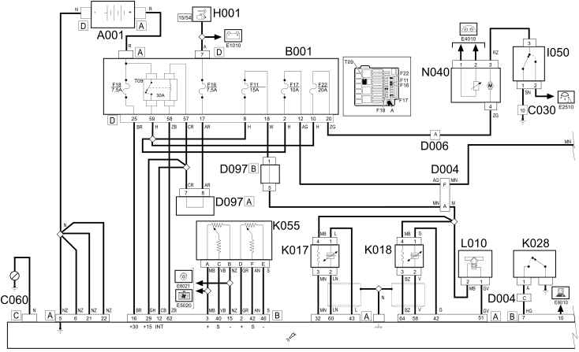
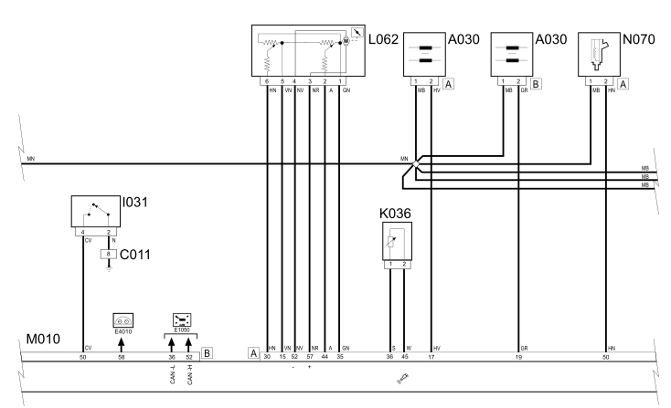

E5030 PETROL ENGINE ELECTRIC MANAGEMENT - WIRING DIAGRAM
- Path
- Electrical equipment > 1 ELECTRICAL FUNCTIONS > E50 ENGINE CONTROL AND MANAGEMENT SYSTEMS > E5030 PETROL ENGINE ELECTRONIC MANAGEMENT > E5030 PETROL ENGINE ELECTRIC MANAGEMENT - WIRING DIAGRAM
- Kind
- wiring diagram
- Applies to
- engines: 1.2 8v; all production periods; only with equipment: Right hand drive and POWERED THROTTLE
- Interactive page
- https://sloeber94.github.io/elrnDB-fPnd/en/#/169002442
Applies to: engines: 1.2 8v; all production periods; only with equipment: Right hand drive and POWERED THROTTLE
Wiring Diagram



COMPONENTS
Component code | Description | Reference to the assembly |
|---|---|---|
A1 | BATTERY (+) | |
Ignition coil | ||
JUNCTION UNIT | ||
RIGHT FRONT EARTH | - | |
LEFT REAR EARTH | - | |
Injection ECU earth | - | |
D4 | FRONT/ENGINE JUNCTION | - |
D6 | REAR / ENGINE COMPARTMENT JUNCTION | - |
D97 | Short circuit coupling | - |
H1 | Ignition switch | |
I31 | CLUTCH PEDAL SWITCH | - |
I50 | INERTIAL SWITCH | |
Lambda sensor on catalyzer | ||
Lambda sensor on catalyzer -2 | ||
Engine oil pressure sensor | ||
Engine coolant temperature sensor/sender unit | ||
K55 | ACCELERATOR PEDAL POTENTIOMETER | |
Throttle position sensor | ||
Speedometer sensor | - | |
BODY COMPUTER | ||
ENGINE MANAGEMENT ECU | ||
N40 | FUEL PUMP AND SENDER UNIT | |
Injector | ||
Idle actuator |
Topics linked from this page (24)
- 1040A fuel tank and components
- 1056B multi-point injection system (mpi)
- 1068A ACCELERATOR PEDAL CONTROL
- 1080B exhaust emission control system
- 1084A indicators/check devices
- 5505A multi-function components
- 5510C coil, ecu, sensors
- 5520A ignition switch
- 5530B battery and leads
- A030 IGNITION COIL
- B001 JUNCTION UNIT
- C011 RIGHT FRONT EARTH
- C030 LEFT REAR EARTH
- C060 INJECTION CONTROL UNIT EARTH
- K017 LAMBDA SENSOR ON CATALYZER
- K018 LAMBDA SENSOR ON CATALYZER - 2
- K028 ENGINE OIL PRESSURE SENSOR
- K036 ENGINE COOLANT TEMPERATURE SENSOR/SENDER UNIT
- K056 THROTTLE POSITION SENSOR
- K084 SPEEDOMETER SENSOR
- M001 BODY COMPUTER
- M010 ENGINE MANAGEMENT ECU
- N070 INJECTOR
- N074 IDLE ACTUATOR